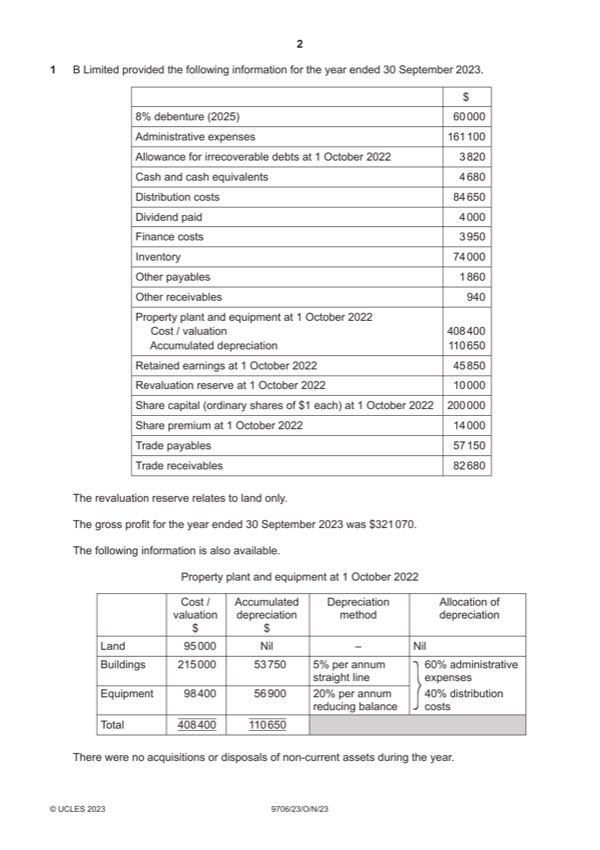

Question 1

Original paper page 2
Part 1(a) — solution
Prepare an extract from the statement of profit or loss for the year ended 10
Mark points
- Include the ideas shown in the solution above.
Part 1(b) — solution
Answer: 157 510
Prepare the statement of financial position at 30 September 2023. 15
B Limited
Statement of financial position at 30 September 2023
$
Assets
Non-current assets 263 700 (1)
Current assets
Inventory 74 000 (1)
Trade receivables W1 77 140 (1)
Other receivables W2 1 690 (1)
Cash and cash equivalents 4 680 (1)
157 510
Total assets 421 210 (1)OF
Equity and liabilities
Equity
Share capital 220 000
Retained earnings W3 65 220 (4)OF
Total equity 285 220
Non-current liabilities
8% debentures (2025) 60 000 (1)
Current liabilities
Trade payables 57 150 (1)
Other payables W4 6 340 (1)
Taxation 12 500 (1)
Mark points
- Correct result: 157 510
Part 1(c) — solution
- Rights issue is a permanent source of capital (1)
- Dividend payment is discretionary (1)
- Will issue be fully subscribed? (1)
- Will raise $60 500 cash (1)
- Debenture will have to be repaid (1)
- Interest must be paid whether profits or losses (1)
- Interest payments will reduce profits (1)
- Security may be required (1)
Mark points
- Rights issue is a permanent source of capital (1)
- Dividend payment is discretionary (1)
- Will issue be fully subscribed? (1)
- Will raise $60 500 cash (1)
- Debenture will have to be repaid (1)
- Interest must be paid whether profits or losses (1)
- Interest payments will reduce profits (1)
- Security may be required (1)